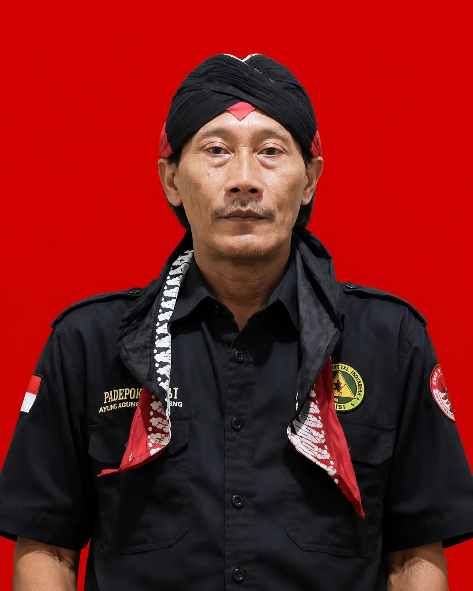
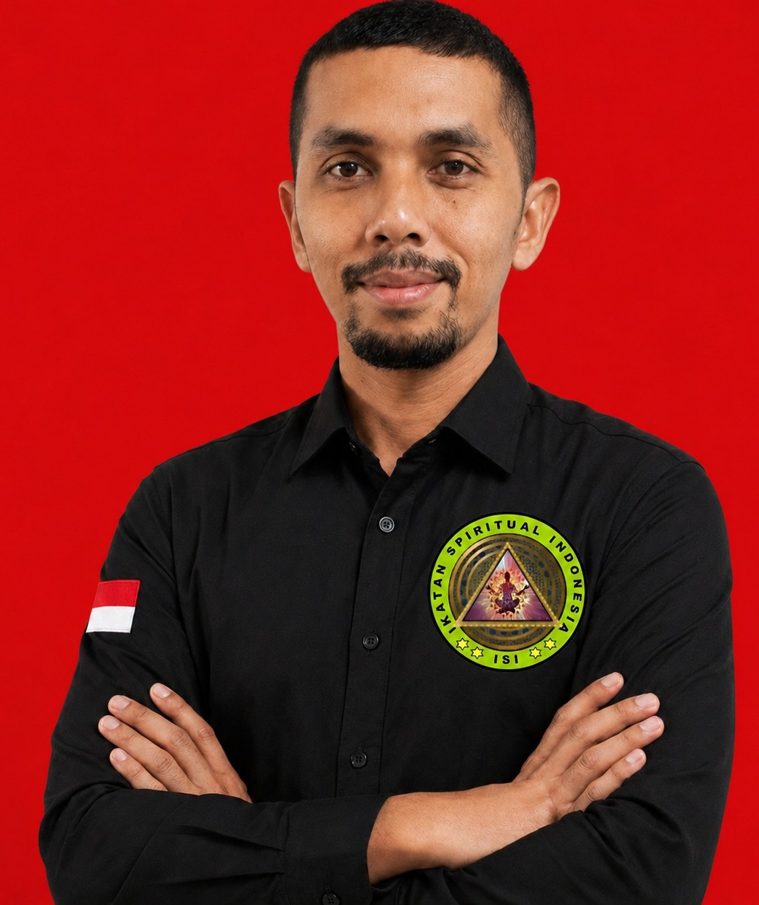
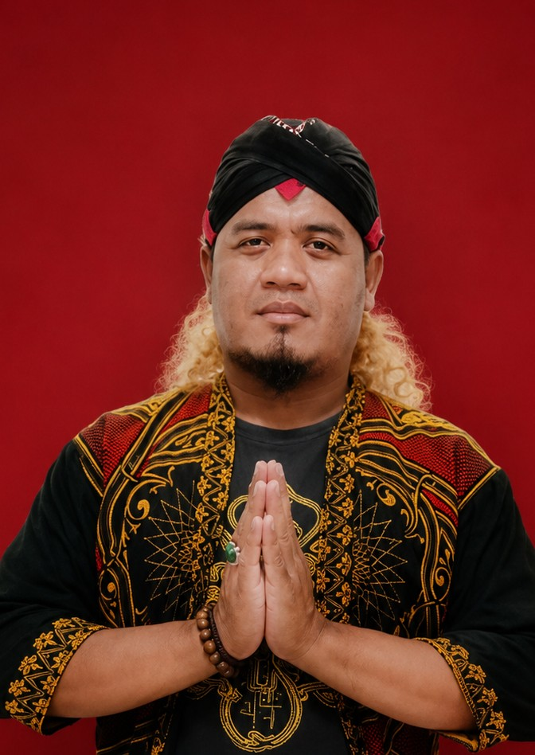

Struktur Kepengurusan
Silsilah koordinasi dan kepemimpinan Yayasan Ikatan Spiritual Indonesia.
Ki Paku Bumi
Ketua Umum
Pimpinan Pusat Yayasan

Thabib Rhido
Sekretaris Jenderal
Ki Panca Lodra
Bendahara Umum

Ki Asmoro Jiwo
Staff Admin

Raden Ki Jagat Pamungkas
Humas

Raden Jagat Kamulyan
Pembina Yayasan

Patih Anom Tunggal Alam
Sekretaris DPW Jateng

Ki Jogo Suro
Ketua DPW Jateng

Mbah Gepeng
Staff Hukum

Ketua Divisi
Divisi 4

Ketua Divisi
Divisi 5

Ketua Divisi
Divisi 6